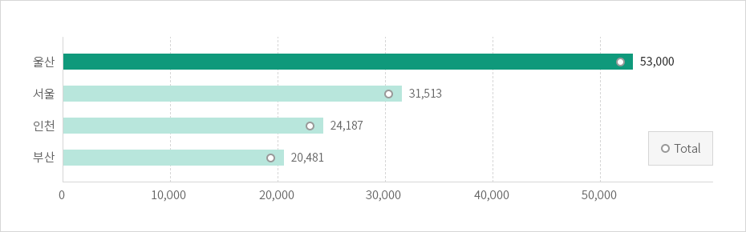

노동 및 고용환경
- Home
- 투자 강점
- 투자환경
- 노동 및 고용환경
높은 농동생산성
울산은 높은 노동생산성을 가진 도시입니다 . 울산의 노동자 1인이 창출하는 부가가치는 약 53,000달러에 이르는 반면 충남은 약 42,698달러, 기타 다른 도시들은 울산의 절반 정도에 그치고 있습니다.
노동생산성 비교
(단위 : 달러, 노동생산성 : GDP/경제활동인구)



안정적인 고용환경
한국에서 가장 기업친화적인 정서를 가진 도시로 평가받고 있는 울산은 2005 년부터 기업사랑운동을 대대적으로 전개해오고 있으며 노·사가 한 배를 탄 공동운명체라는 신노사문화를 발전시키고 있습니다.